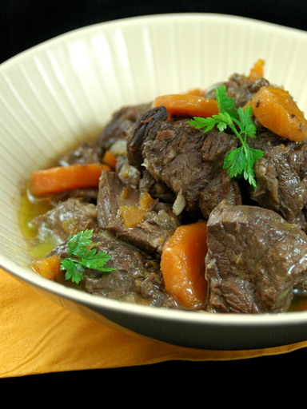

Boeuf bourguignon
Recette facile et économique
Temps de préparation : 60 minutes
Temps de cuisson : 300 minutes
Ingrédients (pour 4 personnes)
- 600 à 800 g de pièce à fondue pour bourguignon
- 4 ou 5 oignons
- 1 bouquet garni
- 1 bouteille de vin rouge assez bon
- 100 g de beurre
- sel
- poivre
Préparation de la recette
- Détailler la viande en cubes de 3 cm de côté, enlever les gros morceaux de gras.
- Couper l'oignon en morceaux. Le faire revenir dans une poêle au beurre. Une fois transparent, le verser dans une cocotte en fonte de préférence.
- Procéder de même avec la viande mais en plusieurs fois, jusqu'à ce que tous les morceaux soient cuits. Les ajouter au fur et à mesure dans la cocotte. Ne pas avoir peur d'ajouter du beurre entre chaque fournée.
- Quand toute la viande est dans la cocotte, déglacer la poêle avec de l'eau ou du vin et faire bouillir en raclant pour récupérer le suc. Saler, poivrer, ajouter au reste.
- Recouvrir le tout avec une partie du vin et faire mijoter quelques heures avec le bouquet garni et les carottes en rondelles.
- Le lendemain, faire mijoter au moins 2 heures en plusieurs fois, ajouter du vin ou de l'eau si nécessaire.
Finir bouteille de vin
Voir les commentaires
Temps de préparation : 60 minutes
Temps de cuisson : 300 minutes